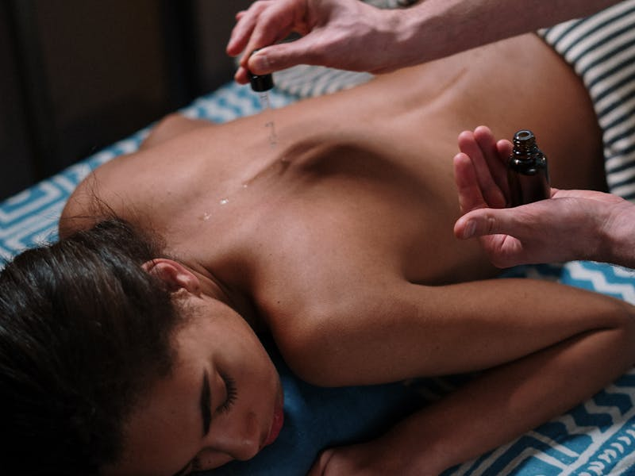

Липолитики и выведение филлера -- коррекция объёмов и исправление результатов
Цена
от 3 000 ₽
Длительность
15-30 минут

На этой странице собраны дополнительные процедуры, которые решают конкретные эстетические задачи: коррекция локальных жировых отложений и удаление нежелательного филлера.
Липолитики (LIGHT FIT) -- это инъекционные препараты для расщепления подкожного жира. LIGHT FIT вводится непосредственно в проблемную зону (подбородок, щёки, тело) и разрушает мембраны жировых клеток. Продукты распада естественным образом выводятся через лимфатическую систему. Процедура позволяет убрать локальные жировые отложения без хирургического вмешательства.
Выведение филлера (Liporase) -- это ферментный препарат на основе гиалуронидазы, который полностью растворяет гиалуроновый филлер. Процедура необходима при неудачной контурной пластике, миграции филлера, асимметрии или гиперкоррекции. Liporase действует быстро -- филлер растворяется в течение 24-48 часов.
Обе процедуры выполняются быстро, с минимальным периодом восстановления, и дают видимый результат уже после первого сеанса.
Липолитики и коррекция филлера
Инъекционное расщепление жировых отложений. Подбородок, щеки, тело
Растворение гиалуронового филлера ферментом. Коррекция неудачных инъекций
Процедура занимает 15-30 минут, минимальный период восстановления
Определение зон коррекции, оценка объёма жировых отложений
Фиксация исходного состояния для отслеживания результата
Определение точек и глубины введения препарата
Дезинфекция зоны инъекций
Введение LIGHT FIT или Liporase в намеченные точки
Распределение препарата для равномерного действия
Когда рекомендованы липолитики и выведение филлера
Небольшие скопления подкожного жира, которые не поддаются диетам и физическим упражнениям
Жировые отложения в подбородочной области, нарушающие чёткость контура нижней челюсти
Результат филлерных инъекций не устраивает -- асимметрия, гиперкоррекция, неестественный вид
Филлер сместился из зоны введения, образовались уплотнения или неровности
Процедура не проводится при наличии следующих состояний
Для наилучшего результата соблюдайте рекомендации
Процедуры, которые дополняют и усиливают результат
Косметолог Надежда проведёт осмотр, определит оптимальную процедуру и составит индивидуальный план коррекции.